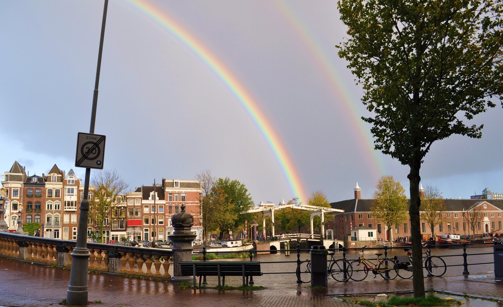
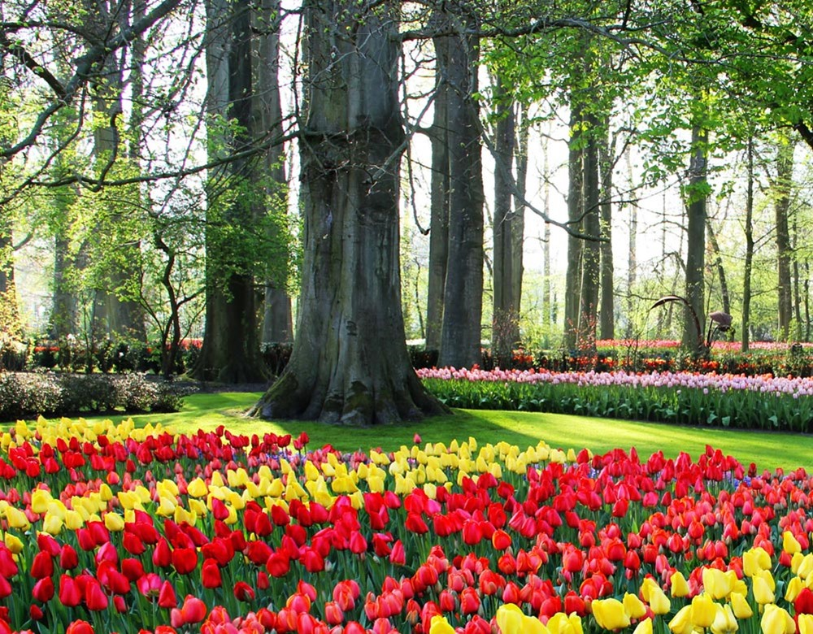
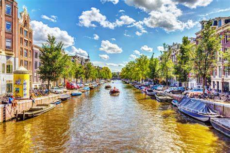
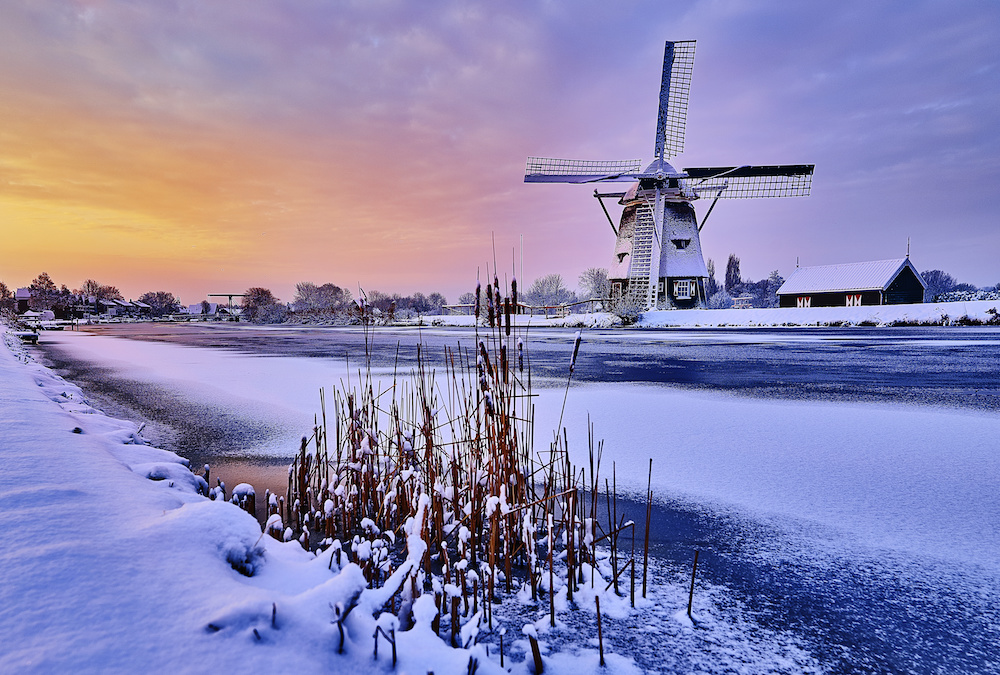

Navigation
Climate
The Netherlands is a country that boasts a typical maritime climate with mild summers and cold winters. Wind and rain are common throughout most of the year with July and August being the wettest months. March is the driest month of the year.
Because the Netherlands features flat landscapes, wind may be a concern for tourists, especially during the winter and summer months. Winds are typically much stronger along the coast than they are further inland.
Rainfall and Sunshine
The Netherlands is known for having unpredictable weather. Rainfall is pretty common with a dryer period from April to September. The country receives approximately 79cm of precipitation each year. Spring and Fall
March to May and September to October are considered shoulder seasons. April brings beautiful daffodils and tulips bloom in May. The weather is generally warm during this time, which makes it an excellent time to travel. This is the driest season of the year.
Summer
The high season runs from June to August and is the most popular season for tourists. During this time, the weather is warm but not excessively hot. The summer is the best time to enjoy the canals of Amsterdam or a long walk in the park. During July, the average temperature is 17.9 degrees Celsius, or 64.2 degrees Fahrenheit Winter
Winter runs from November to March and brings with it cool temperatures. Between December and February, snow, fog and freezing temperatures are not uncommon. In January, the average temperature is 2 degrees Celsius, or 35 degrees Fahrenheit. Those who are looking to mingle with the locals and enjoy a more affordable holiday should consider traveling to the Netherlands in the winter. During this time, most tourists go home and the city streets quiet down. Famous Landmark
Amterdam
The canals of Amsterdam are easily the most famous landmark in the Netherlands and one of the postcards of Amsterdam. They mark the city and create a stunning setting for any trip. The three main canals (Herengracht, Prinsengracht, and Keizersgracht) were dug in the 17h century creating a concentric belt around the city. The whole network of canals has more than 100 km of waterways, 90 islands, and 1500 bridges, and 1550 monumental buildings making Amsterdam the “Venice of the North.”
Cube houses Rotterdam
The cube houses in Rotterdam, also known locally as Kubuswoningen, is a residential area full of bright yellow houses where people actually reside! They are quite an iconic landmark synonymous with Rotterdam. They are located above Blaak metro station on Overblaak Street, about a twenty-minute walk from the Rotterdam train station at a 45-degree tilt. 38 small cubes ‘stuck’ next to each other can be seen from the station and are an excellent example designed by architect Piet Blom in 1977 to showcase the optimal use of space.
Van Gogh Museum
The Van Gogh Museum is one of the most popular destinations in the Netherlands. Located in the Museum Square (Museumplein) next to the Rijksmuseum, in Amsterdam, it’s visited by more than 1.5 million people every year. It contains the largest collection of art created by Vincent van Gogh, one of the most popular painters of all time. The permanent collection includes more than 200 paintings, 500 drawings, and 750 letters from the Dutch master. It is organized chronologically so you can learn about the life and work of van Gogh, watching his development as an artist, and how his work has evolved. Besides Van Gogh’s artwork, there’s also a nice collection of other impressionists and post-impressionists artists.